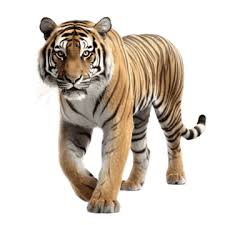
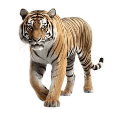
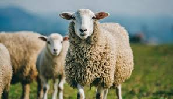
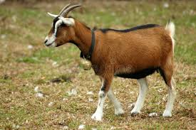
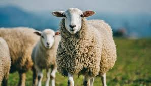
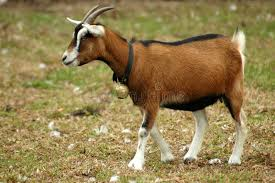
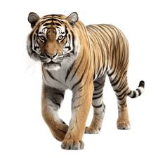

Animals are living organisms that belong to the kingdom Animalia. They are characterized by their ability to move, reproduce, and respond to stimuli. Animals can be classified into two main categories: domestic animals and wild animals.
Domestic animals are animals that have been tamed and bred by humans for companionship, work, or food. They live in close association with humans and rely on them for care and sustenance. Examples of domestic animals include dogs, cats, cows, and chickens. Domestic animals have been selectively bred over generations to enhance specific traits that are beneficial to humans.

 



Wild animals are animals that live in natural environments such as
forests, jungles, and savannas. They find their own food, water, and
shelter, and are not tamed or kept as pets. Examples of wild animals
include lions, elephants, deer, and eagles. Wild animals play important
roles in maintaining the balance of nature.

The main difference between wild and domestic animals is their relationship with humans. Wild animals are independent and live in their natural habitats, while domestic animals are dependent on humans for survival and have adapted to living in human environments. This domestication process has led to significant changes in their behavior, physical characteristics, and reproductive patterns.